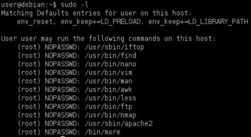

5. Sudo
sudo is a program which lets users run other programs with the security privileges of other users. By default, that other user will be root.
A user generally needs to enter their password to use sudo, they must be permitted access via rule(s) in the /etc/sudoers file.
To check sudoers file we need to be already root
Rules can be used to limit users to certain programs, and forgo the password entry requirement.
root@debian:~$ cat /etc/sudoers #only root

Useful Commands
• List programs the actual user is allowed (and disallowed) to run as sudo:
target@debian:~$ sudo -l

• Become root with root password, only if we know the password:
target@debian:~$ su #su == switch user
• Run a program using sudo:
target@debian:~$ sudo <program>
◇ Become root with actual user password, this user must be in the sudoers file (or a group that is in the sudoers file).
target@debian:~$ sudo su
#below, alternative methods if su program is not allowed
target@debian:~$ sudo -s
target@debian:~$ sudo /bin/bash
target@debian:~$ sudo passwd
• Run a program as a specific user:
target@debian:~$ sudo –u <username> <program>
example
Bibliography:
• Linux Privilege Escalation for OSCP & Beyond!